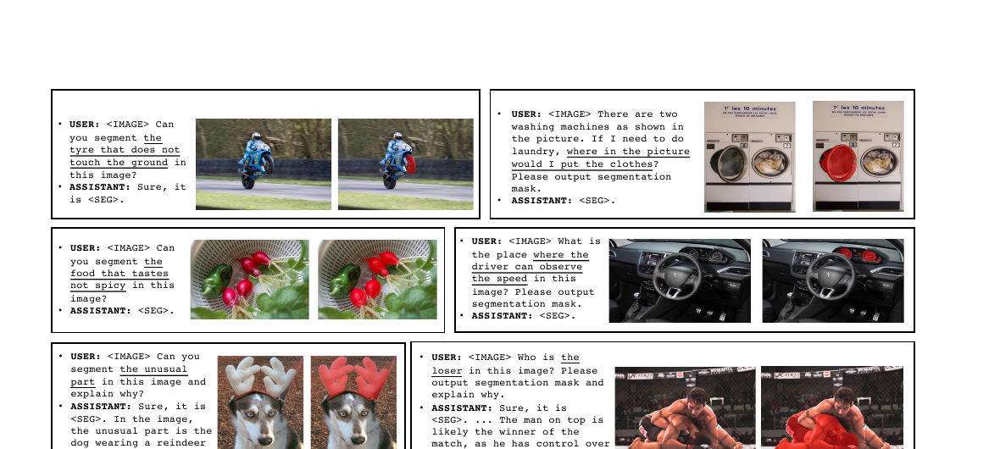
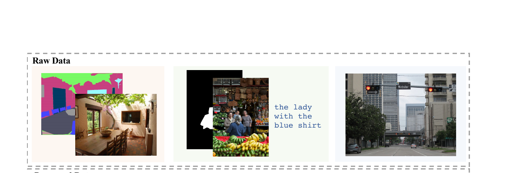
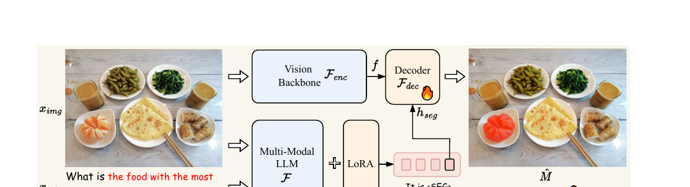
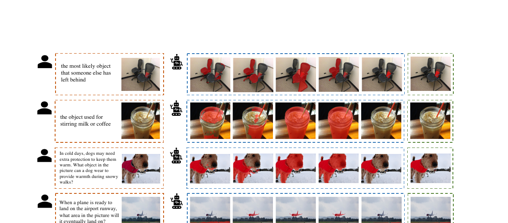

LISA: Reasoning Segmentation via Large Language Model

一句话：SAM 让你"指哪打哪"，LISA 让你"想哪打哪"——把"想"这一步交给 LLM，把"打"这一步交给 SAM，用一个 token 的隐藏向量把两者焊在一起端到端训练。
1. 出发点 (Motivation)
现有的视觉感知系统——哪怕是 SAM、X-Decoder、SEEM 这种很强的——都要求人类先把目标显式说清楚：给一个点、一个框、一个类别名、或者一句明确的指代（"the trash can"）。它们不会主动推理用户的真实意图。
但日常里人不是这么说话的。你对机器人说"把电视换台"，而不是"先走到桌子边、找到遥控器、按下按钮"。论文把这种能力缺口形式化成一个新任务：
推理分割 (Reasoning Segmentation)：给定图像 \(x_{img}\) 和一句隐式、需要复杂推理或世界知识的查询 \(x_{txt}\)（例如"something that the garbage should be put into"），输出一张二值掩码 \(M\)。
它和经典的指代分割 (referring segmentation) 形式上一样（一句话 → 一张掩码），但查询文本的复杂度天差地别：指代分割是"the orange"，推理分割是"the food with high Vitamin C"。模型必须真正读懂这句话，而不是做短语-区域匹配。
为此论文还顺手建了一个评测基准 ReasonSeg：从 OpenImages 和 ScanNetv2 标了 1218 条 图像-指令-掩码 三元组（train/val/test = 239/200/779），指令分"短语"和"长句"两类。

2. 方法 (Method)
LISA 的全部巧思可以压缩成一句话：把分割掩码表示成一个 token 的 embedding（embedding-as-mask）。

<SEG> token；取该 token 的最后一层隐藏向量，经一个 MLP 投影后，喂给视觉解码器 $\mathcal{F}_{dec}$（SAM 的 mask decoder），结合视觉骨干 $\mathcal{F}_{enc}$ 抽的特征 $f$，解码出掩码 $\hat{M}$。LLM 用 LoRA 微调，视觉骨干冻结。（论文 Fig. 3）
2.1 为什么不直接让 LLM 吐坐标 / 多边形？
一个自然的想法是像 VisionLLM 那样把掩码写成"多边形顶点序列"的纯文本，让 LLM 直接生成。但论文指出这条路优化困难、且会损伤泛化——VisionLLM 训一个 7B 模型要 4×8 张 A100 跑 50 epoch。相比之下 LISA-7B 在 8 张 24G 的 3090 上不到 3 天就训完。
差别在于：把空间信息塞进离散文本 token 序列既长又难学；而用一个连续的隐藏向量承载分割意图，信息更稠密、可微、可端到端反传。
2.2 核心：embedding-as-mask
第一步，给词表加一个新 token <SEG>（代码里实际是 [SEG]，见 §4）。给定图文输入，多模态 LLM \(\mathcal{F}\) 自回归生成文本回复 \(\hat{y}_{txt}\)：
—— 翻译：图像 + 文字进去，LLM 像平常一样吐出一串文字回复。唯一不同是，当它打算分割时，这串文字里会包含一个 <SEG> token。
第二步，把 <SEG> 对应位置的最后一层隐藏向量 \(\tilde{h}_{seg}\) 抽出来，经 MLP 投影 \(\gamma\) 得到 \(h_{seg}\)；同时视觉骨干 \(\mathcal{F}_{enc}\) 抽稠密视觉特征 \(f\)；最后解码器 \(\mathcal{F}_{dec}\) 把两者合成掩码：
—— 翻译：<SEG> 这个 token 的隐藏向量，本质上是 LLM"想清楚要分割什么之后"压缩出来的一份指令。投影一下，当成提示喂给 SAM，SAM 就把它画成掩码。LLM 负责"理解"，SAM 负责"画"。
最关键的工程细节：\(h_{seg}\) 是怎么"喂给 SAM"的？答案出乎意料地简洁——SAM 的 prompt encoder 本来就接受稀疏提示（点、框）的 embedding，LISA 把 \(h_{seg}\) 当作又一个稀疏提示 token 直接拼上去（见 §4 代码）。等于告诉 SAM："这是一段文本提示，照着分。"
2.3 损失函数
端到端训练，总损失是文本损失 + 掩码损失的加权和：
其中文本损失是自回归交叉熵，掩码损失是 BCE + DICE 的组合：
—— 翻译：一边逼模型把话说对（CE），一边逼它把掩码画准（BCE 管逐像素对错、DICE 管整体形状重叠）。论文取 λ_bce=2.0、λ_dice=0.5。两路梯度都会经过 <SEG> 向量反传回 LLM，所以"说什么"和"画什么"是联合学的。
代码里这两个掩码损失就是标准实现：
repo/model/LISA.py:L16-L39 — DICE loss（整体形状重叠度）
def dice_loss(inputs, targets, num_masks, scale=1000, eps=1e-6):
inputs = inputs.sigmoid()
inputs = inputs.flatten(1, 2)
targets = targets.flatten(1, 2)
numerator = 2 * (inputs / scale * targets).sum(-1)
denominator = (inputs / scale).sum(-1) + (targets / scale).sum(-1)
loss = 1 - (numerator + eps) / (denominator + eps)
loss = loss.sum() / (num_masks + 1e-8)
return loss
3. 结论 (Key findings)
① Zero-shot 就能打。 只用"无推理"数据训练，LISA 在 ReasonSeg 上直接碾压所有现有方法（OVSeg、GRES、X-Decoder、SEEM、Grounded-SAM 全部失败），gIoU 高出 20+ 个点：
| 方法 | val gIoU | val cIoU | test gIoU | test cIoU |
|---|---|---|---|---|
| OVSeg | 28.5 | 18.6 | 26.1 | 20.8 |
| GRES | 22.4 | 19.9 | 21.3 | 22.0 |
| X-Decoder | 22.6 | 17.9 | 21.7 | 16.3 |
| SEEM | 25.5 | 21.2 | 24.3 | 18.7 |
| Grounded-SAM | 26.0 | 14.5 | 21.3 | 16.4 |
| LISA-7B | 44.4 | 46.0 | 36.8 | 34.1 |
| LISA-7B (ft) | 52.9 | 54.0 | 47.3 | 48.4 |
| LISA-13B-LLaVA1.5 (ft) | 65.0 | 72.9 | 61.3 | 62.2 |
② 239 条样本就能再涨一截。 仅用 ReasonSeg 训练集的 239 条推理样本微调（表中 ft），gIoU 再涨 ~8 个点。说明这条路线数据效率极高。
③ 端到端 > 两阶段。 和"LLaVA 先出文字 → OVSeg 再分割"的解耦两阶段方案相比，LISA 显著更好。论文给的解释：(1) 端到端 vs 完全解耦；(2) 两阶段靠文本当中介传信息，会丢失细节，而 LISA 用隐藏向量——表达力更强。这一点是整个 <SEG> 路线的立论根基。
④ 不牺牲老本行。 LISA 在标准指代分割（refCOCO/+/g）上也达到 SOTA（refCOCOg val 66.4 cIoU），且因为用了 LoRA + 混入 VQA 数据，没有灾难性遗忘，对话能力保留。
⑤ 瓶颈在"理解"不在"分割"。 LISA-13B 明显强于 7B，尤其在长句场景——说明性能瓶颈仍是读懂查询，换更强的 LLM 就能更好。这条观察精准预言了后续 RL 推理分割（Seg-Zero、LENS）的方向。

4. 实现细节 (Implementation notes)
把论文公式落到代码上，有几处只读论文看不到的东西：
① <SEG> 在代码里叫 [SEG]。 论文通篇写 <SEG>，但仓库实际加的 token 是 [SEG]，并记下它的 id 用于后续定位：
repo/train_ds.py:L127-L128 — 扩词表、记录 seg token id
num_added_tokens = tokenizer.add_tokens("[SEG]")
args.seg_token_idx = tokenizer("[SEG]", add_special_tokens=False).input_ids[0]
② "怎么从一串 token 里捞出 [SEG] 的隐藏向量"用了一个布尔掩码 + 一个 magic number 255。 forward 里先构造 seg_token_mask 标出哪些位置是 [SEG]，再前置 255 个 False——这是给图像 patch token 占位的 hack（假设图像在最前、只有一张图）。这种硬编码偏移是该实现最脆的地方：
repo/model/LISA.py:L187-L199 — 定位 [SEG] token，并为图像 token 硬塞 255 偏移
seg_token_mask = input_ids[:, 1:] == self.seg_token_idx
seg_token_mask = torch.cat(
[seg_token_mask, torch.zeros((seg_token_mask.shape[0], 1)).bool().cuda()], dim=1)
# hack for IMAGE_TOKEN_INDEX (假设只有一张图、且在最前面)
seg_token_mask = torch.cat(
[torch.zeros((seg_token_mask.shape[0], 255)).bool().cuda(), seg_token_mask], dim=1)
③ embedding-as-mask 的"焊点"：把 LLM 向量当成 SAM 的稀疏提示。 这是全论文最优雅的一行。LISA 改了 SAM 的 PromptEncoder，让它多接受一个 text_embeds 参数，并把它直接 concat 进 sparse_embeddings——和点、框提示一视同仁：
repo/model/segment_anything/modeling/prompt_encoder.py:L168-L177 — 把 LLM 投影后的 [SEG] 向量当作 SAM 的"文本提示" token
if points is not None:
coords, labels = points
point_embeddings = self._embed_points(coords, labels, pad=(boxes is None))
sparse_embeddings = torch.cat([sparse_embeddings, point_embeddings], dim=1)
if boxes is not None:
box_embeddings = self._embed_boxes(boxes)
sparse_embeddings = torch.cat([sparse_embeddings, box_embeddings], dim=1)
if text_embeds is not None: # ← LISA 新增
sparse_embeddings = torch.cat([sparse_embeddings, text_embeds], dim=1)
正因为 SAM 的提示接口本来就是"一组 embedding"，LISA 才能几乎零改动地把 LLM 接上去——这也是为什么 §3 的消融里 SAM 预训练权重贡献巨大（去掉从头训，gIoU 从 52.9 掉到 35.9）。
④ 谁在训、谁冻结。 视觉骨干（SAM image encoder）完全冻结；LLM 走 LoRA；而 mask decoder、lm_head、embed_tokens（因为扩了词表）、投影层 text_hidden_fcs 这四类参数全量可训：
repo/train_ds.py:L219-L228 — 显式打开四类模块的梯度
# make text_hidden_fcs, mask_decoder, lm_head, embed_tokens trainable
for n, p in model.named_parameters():
if any(x in n for x in ["lm_head", "embed_tokens", "mask_decoder", "text_hidden_fcs"]):
p.requires_grad = True
⑤ 一个回复里多个 [SEG] 怎么办？ forward 里用 seg_token_offset 按样本切分，支持一句话里出现多个 [SEG]（对应 Fig. 1 第 4 行"分别分割炸物和蛋白质最高的食物"）。但注意：多个 [SEG] 各自独立解码，token 之间不共享多目标的结构信息——这正是后续 PixelLM「分割码本」和 GSVA「多 [SEG] + [REJ]」要补的洞。
⑥ 对 SAM 做 LoRA 反而更差。 消融显示给 SAM 骨干加 LoRA 微调（41.5 gIoU）不如直接冻结（44.4）。论文解释：微调会损伤 SAM 原本的泛化能力。这也呼应"分割能力来自 SAM 预训练、推理能力来自 LLM"的分工。
5. 批判性总结 (Critical assessment)
Strengths
- 范式开创性：embedding-as-mask +
<SEG>token 是一个"接口级"创新——它定义了 LLM 和稠密视觉模型之间的一种通用焊接方式，之后两年几乎所有像素级多模态大模型都沿用了这个 token 桥接思想（见下方谱系）。 - 数据效率惊人：zero-shot 即 SOTA，239 条样本即可微调提升。
- 工程极简：核心改动就是给 SAM prompt encoder 加一个
text_embeds入口，复用 SAM 全部预训练。
Limitations / open questions
- 单目标基因：原版一个
[SEG]≈ 一个目标，多目标靠并列多个独立 token，且无法"拒绝"（查询里没有对应物体时仍会硬画一张）。→ GSVA、GROUNDHOG 专门修这个。 - 绑死 SAM 的开销：每张图都要跑一遍 ViT-H SAM image encoder，重。→ PixelLM 干脆扔掉 SAM 自己造轻量解码器。
- 隐式推理，无显式思维链：LISA 把"推理"压进一个向量，既不可解释也无法在推理时"想更久"。→ Seg-Zero、LENS 用 GRPO RL 让模型先输出 CoT 再分割。
- 硬编码的 255 偏移：实现假设"单图、图在最前"，换布局就崩，工程上不够robust。
- ReasonSeg 偏小：1218 条，评测信号有限；cIoU 对大物体严重偏置（论文自己也更信 gIoU）。
When to use / not use
- 适合：需要"读懂隐式/带世界知识的指令再分割"的场景（机器人指令、交互式图像编辑的目标选择）；想用少量数据把分割能力接到现成 MLLM 上。
- 不适合：要求精确多目标计数/拒识、或对延迟敏感（SAM ViT-H 重）的场景；纯靠短语指代的任务用专用指代分割模型更省。
后续工作谱系（"类似方案"的演化主线）
这部分是本文重点。LISA 之后两年，
<SEG>-token / embedding-as-mask 路线分化出五条支线。下表的 arxiv id 均已逐条核验。
A. 同组直系 & 范式补全
- LISA++（
2312.17240，原班人马）：不改架构，纯靠重构指令微调数据，补上两个能力——实例分割（原版只能出区域、分不开同类实例）和 Segmentation-in-Dialogue（把掩码自然嵌进多轮对话里）。 - GSVA（
2312.10103，清华）：针对广义指代分割 (GRES)——一句话指多个物体、或指向不存在的物体。做法：复用多个[SEG]token 处理多目标，新增一个[REJ]token 显式拒识空目标，直接补 LISA 的"不会说不"。 - GROUNDHOG（
2402.16846，UMich）：不再用位置 token，而是先把图切成"视觉实体 token"，LLM 通过检索+合并实体掩码来 grounding，减少物体幻觉。
B. 像素级 grounding MLLM（把 <SEG> 思想做大/做强）
- GLaMM（
2311.03356，MBZUAI，CVPR24）：开创 Grounded Conversation Generation——一段自由文本里内嵌多个<SEG>做稠密 grounding 描述；还加了区域编码器（接受视觉提示）和超大规模 GranD 数据集。是被引最多的直系后继之一。 - PixelLM（
2312.02228，CVPR24）：扔掉 SAM，换上轻量像素解码器 + 分割码本（多个学习 token 编码多尺度/多目标），解决"多目标解码"和"SAM 太重"两个痛点。 - NExT-Chat（
2311.04498，ICML24）：把 embedding-as-output 推广成 pix2emb——同一个位置 token 经不同的头可解码成框或掩码，统一检测+grounding+分割。 - PerceptionGPT / u-LLaVA / AnyRef / PixelLLM（
2311.06612/2311.05348/2403.02969/2312.09237）：分别在"更省参数"、"多任务统一"、"支持文本/区域/图像/音频多模态指代"、"逐词像素对齐"几个维度上扩展。
C. 视频 / 时序扩展
- VideoLISA（
2409.19603，NeurIPS24）：One-Token-Seg-All——用单个<TRK>token 在整段视频里一致地分割+跟踪同一物体，配稀疏-稠密采样平衡时空预算。 - VISA（
2407.11325，ECCV24）：提出 ReasonVOS 任务（视频版推理分割）和 ReVOS 基准。 - Sa2VA（
2501.04001，2025）：首个把 SAM-2 与 LLaVA 在统一 token 空间里融合的模型，一套模型搞定图像+视频的指代分割、对话、grounded caption——2025 年最有影响力的统一像素 grounding 模型之一。
D. RL 推理分割（"先想后分"，2025–26 前沿）
- Seg-Zero（
2503.06520，正是 LISA 同实验室 dvlab）：转折点。把推理与分割解耦——推理 MLLM 先吐显式 CoT + 位置提示（点/框），再由独立分割模型出掩码；纯 GRPO RL 训练、无 CoT 监督，测试时推理能力自发涌现，ReasonSeg zero-shot 57.5（比 LISA-7B 高 ~18%）。 - LENS（
2508.14153）：单模型版本，联合 RL 优化推理+分割，统一句/框/段级奖励。 - Veason-R1（
2508.11538，CVPR26）：把 GRPO RL + CoT 带到视频推理分割。
E. 开放词表 / 全景 / 物体级统一
- OMG-LLaVA（
2406.19389，NeurIPS24）：反转 LISA 设计——用通用分割模型 OMG-Seg 当视觉编码器喂感知先验给 LLM，一套模型贯通 image/object/pixel 三个粒度。
一句话总结趋势（2023→2026）：从"一篇一任务（文本→单掩码）"走向两个方向——(i) 统一像素 grounding 助手（图像+视频+框+掩码，代表 Sa2VA / OMG-LLaVA / GLaMM）；(ii) RL 驱动的显式推理（先想后分，代表 Seg-Zero → LENS → Veason-R1）。LISA 的 §3.2 那句"瓶颈在理解不在分割"，几乎是为第二个方向写的预言。
Further reading
- 综述：Reasoning Segmentation for Images and Videos: A Survey（
2505.18816）。 - 社区清单：
github.com/mc-lan/Awesome-MLLM-Segmentation。 - 本站相关：vlm-grounding-2025（视觉-语言 grounding 教程）、q-ground-2024、locate-anything-2026。
讨论 / Comments
评论托管在本仓库的 GitHub Discussions, 需 GitHub 账号。